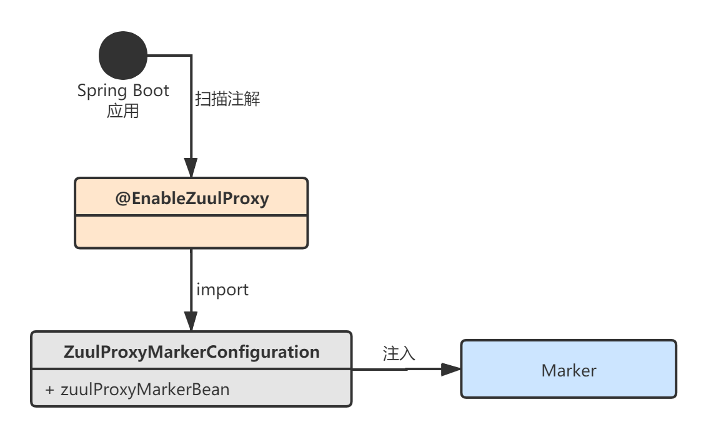
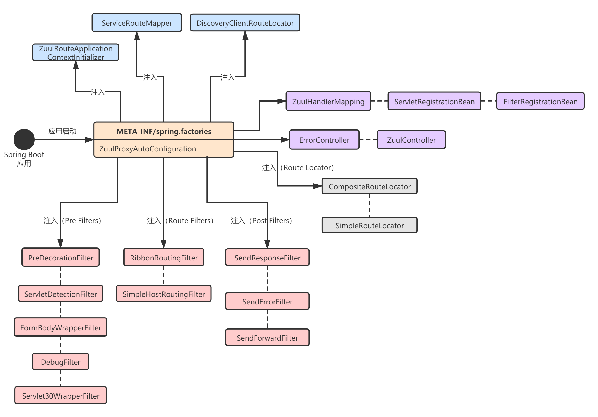
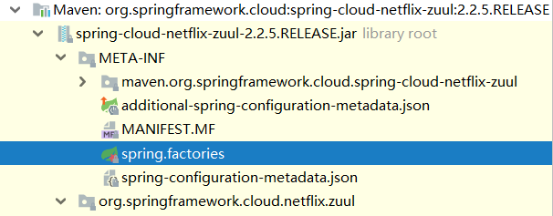
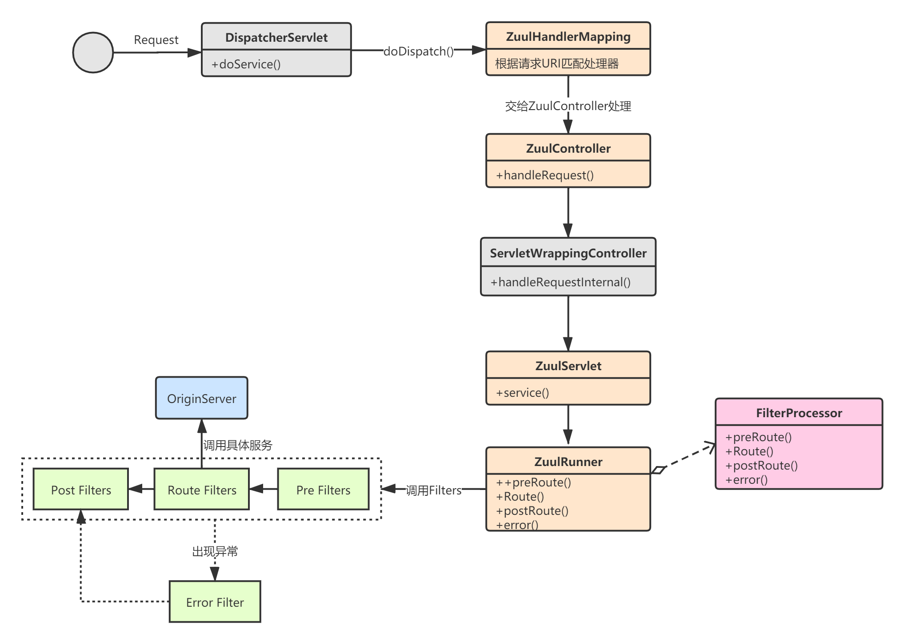

本章，我将对Spring Cloud Netflix Zuul的初始化流程进行讲解。我们在使用Zuul时，基本都是引入spring-cloud-netflix-zuul依赖，然后在启动类上注解@EnableZuulProxy。那么，Spring Cloud底层到底做了什么事情呢？
Spring Boot应用启动后，会去两个地方加载配置：
@EnableZuulProxy注解，执行注解中的@Import操作；spring-cloud-netflix-zuul源码包META-INF目录下的spring.factories配置。我用下面这两张图表述Spring Cloud Netflix Zuul的初始化流程。第一张图很简单，就是注入了一个标记对象，后续自动装配时会根据是否存在该对象选择并注入合理的Bean；第二张图主要描述了Spring Cloud向容器中注入的核心Zuul组件：


我们先来看第一种情况。
Spring Boot应用启动后，扫描到启动类上的@EnableZuulProxy注解：
@EnableCircuitBreaker
@Target(ElementType.TYPE)
@Retention(RetentionPolicy.RUNTIME)
@Import(ZuulProxyMarkerConfiguration.class)
public @interface EnableZuulProxy {
}
@EnableZuulProxy这个注解上标注了@EnableCircuitBreaker，说明Zuul和Hystrix是天然整合在一起的。我们继续看ZuulProxyMarkerConfiguration，它往Spring IoC容器中注入了一个标记对象Marker（啥功能都没有）：
@Configuration(proxyBeanMethods = false)
public class ZuulServerMarkerConfiguration {
@Bean
public Marker zuulServerMarkerBean() {
return new Marker();
}
class Marker {
}
}
后面的Zuul的自动装配类ZuulProxyAutoConfiguration会根据容器中是否有这个Maker对象而使对应的配置Bean生效。
注意：Spring Cloud还提供了一个
@EnableZuulServer注册，功能和@EnableZuulProxy差不多，@EnableZuulServer所包含的功能，@EnableZuulProxy都具备，所以我们一般使用@EnableZuulProxy就可以了。
我们再来看Spring Boot的自动装配机制所加载的类：

# spring.factories
org.springframework.boot.autoconfigure.EnableAutoConfiguration=\
org.springframework.cloud.netflix.zuul.ZuulServerAutoConfiguration,\
org.springframework.cloud.netflix.zuul.ZuulProxyAutoConfiguration
可以看到，主要就是加载了两个自动装配类：ZuulServerAutoConfiguration和ZuulProxyAutoConfiguration。ZuulProxyAutoConfiguration是ZuulServerAutoConfiguration的子类，它整合了Ribbon相关的功能。
我们先来看ZuulServerAutoConfiguration，它的主要作用如下：
// ZuulServerAutoConfiguration.java
@Configuration(proxyBeanMethods = false)
@EnableConfigurationProperties({ ZuulProperties.class })
@ConditionalOnClass({ ZuulServlet.class, ZuulServletFilter.class })
@ConditionalOnBean(ZuulServerMarkerConfiguration.Marker.class) // 注意这里用到了Marker标记类
public class ZuulServerAutoConfiguration {
// yml配置，zuul开头相关配置在这注入
@Autowired
protected ZuulProperties zuulProperties;
// yml配置，server开头相关配置在这注入，比如server.port
@Autowired
protected ServerProperties server;
// 处理错误的Spring MVC Controller
@Autowired(required = false)
private ErrorController errorController;
//...
// 组合路由加载器
@Bean
@Primary
public CompositeRouteLocator primaryRouteLocator(
Collection<RouteLocator> routeLocators) {
return new CompositeRouteLocator(routeLocators);
}
// 简单路由加载器
@Bean
@ConditionalOnMissingBean(SimpleRouteLocator.class)
public SimpleRouteLocator simpleRouteLocator() {
return new SimpleRouteLocator(this.server.getServlet().getContextPath(),
this.zuulProperties);
}
// ZuulController，Zuul请求入口Controller
@Bean
public ZuulController zuulController() {
return new ZuulController();
}
// Zuul请求映射处理器
@Bean
public ZuulHandlerMapping zuulHandlerMapping(RouteLocator routes,
ZuulController zuulController) {
ZuulHandlerMapping mapping = new ZuulHandlerMapping(routes, zuulController);
mapping.setErrorController(this.errorController);
mapping.setCorsConfigurations(getCorsConfigurations());
return mapping;
}
// 路由刷新监听器
@Bean
public ApplicationListener<ApplicationEvent> zuulRefreshRoutesListener() {
return new ZuulRefreshListener();
}
// ZuulServlet
@Bean
@ConditionalOnMissingBean(name = "zuulServlet")
@ConditionalOnProperty(name = "zuul.use-filter", havingValue = "false",
matchIfMissing = true)
public ServletRegistrationBean zuulServlet() {
ServletRegistrationBean<ZuulServlet> servlet = new ServletRegistrationBean<>(
new ZuulServlet(), this.zuulProperties.getServletPattern());
servlet.addInitParameter("buffer-requests", "false");
return servlet;
}
// 创建了ZuulServlet
@Bean
@ConditionalOnMissingBean(name = "zuulServlet")
@ConditionalOnProperty(name = "zuul.use-filter", havingValue = "false",
matchIfMissing = true)
public ServletRegistrationBean zuulServlet() {
ServletRegistrationBean<ZuulServlet> servlet = new ServletRegistrationBean<>(
new ZuulServlet(), this.zuulProperties.getServletPattern());
servlet.addInitParameter("buffer-requests", "false");
return servlet;
}
// 创建了ZuulServletFilter
@Bean
@ConditionalOnMissingBean(name = "zuulServletFilter")
@ConditionalOnProperty(name = "zuul.use-filter", havingValue = "true", matchIfMissing = false)
public FilterRegistrationBean zuulServletFilter() {
final FilterRegistrationBean<ZuulServletFilter> filterRegistration =
new FilterRegistrationBean<>();
filterRegistration.setUrlPatterns(
Collections.singleton(this.zuulProperties.getServletPattern()));
filterRegistration.setFilter(new ZuulServletFilter());
filterRegistration.setOrder(Ordered.LOWEST_PRECEDENCE);
filterRegistration.addInitParameter("buffer-requests", "false");
return filterRegistration;
}
// pre filters
@Bean
public ServletDetectionFilter servletDetectionFilter() {
return new ServletDetectionFilter();
}
@Bean
@ConditionalOnMissingBean
public FormBodyWrapperFilter formBodyWrapperFilter() {
return new FormBodyWrapperFilter();
}
@Bean
@ConditionalOnMissingBean
public DebugFilter debugFilter() {
return new DebugFilter();
}
@Bean
@ConditionalOnMissingBean
public Servlet30WrapperFilter servlet30WrapperFilter() {
return new Servlet30WrapperFilter();
}
// post filters
@Bean
public SendResponseFilter sendResponseFilter(ZuulProperties properties) {
return new SendResponseFilter(zuulProperties);
}
@Bean
public SendErrorFilter sendErrorFilter() {
return new SendErrorFilter();
}
@Bean
public SendForwardFilter sendForwardFilter() {
return new SendForwardFilter();
}
// 用于Zuul的eager加载初始化类
@Bean
@ConditionalOnProperty("zuul.ribbon.eager-load.enabled")
public ZuulRouteApplicationContextInitializer zuulRoutesApplicationContextInitiazer(
SpringClientFactory springClientFactory) {
return new ZuulRouteApplicationContextInitializer(springClientFactory,
zuulProperties);
}
// 该类的作用主要是把初始化的过滤器注册到zuul的FilterRegistry中
@Configuration(proxyBeanMethods = false)
protected static class ZuulFilterConfiguration {
@Autowired
private Map<String, ZuulFilter> filters;
@Bean
public ZuulFilterInitializer zuulFilterInitializer(CounterFactory counterFactory,
TracerFactory tracerFactory) {
FilterLoader filterLoader = FilterLoader.getInstance();
// FilterRegistry是一个单例用于初始化路由信息，在ZuulRunner中使用
FilterRegistry filterRegistry = FilterRegistry.instance();
return new ZuulFilterInitializer(this.filters, counterFactory, tracerFactory,
filterLoader, filterRegistry);
}
}
// Zuul路由刷新监听器
private static class ZuulRefreshListener
implements ApplicationListener<ApplicationEvent> {
@Autowired
private ZuulHandlerMapping zuulHandlerMapping;
private HeartbeatMonitor heartbeatMonitor = new HeartbeatMonitor();
@Override
public void onApplicationEvent(ApplicationEvent event) {
if (event instanceof ContextRefreshedEvent
|| event instanceof RefreshScopeRefreshedEvent
|| event instanceof RoutesRefreshedEvent
|| event instanceof InstanceRegisteredEvent) {
// 刷新路由
reset();
}
else if (event instanceof ParentHeartbeatEvent) {
ParentHeartbeatEvent e = (ParentHeartbeatEvent) event;
resetIfNeeded(e.getValue());
}
else if (event instanceof HeartbeatEvent) {
HeartbeatEvent e = (HeartbeatEvent) event;
resetIfNeeded(e.getValue());
}
}
private void resetIfNeeded(Object value) {
if (this.heartbeatMonitor.update(value)) {
reset();
}
}
private void reset() {
// 设置dirty标识，下一次匹配到路径时，如果dirty==true，就会刷新路由信息
this.zuulHandlerMapping.setDirty(true);
}
}
//...
}
我们再来看ZuulProxyAutoConfiguration这个自动装配类，可以看到，它导入了Ribbon相关的配置，这就是为什么Zuul可以通过服务名进行路由，因为天然整合了Ribbon。
ZuulProxyAutoConfiguration主要就是额外增加了Ribbon和服务发现的功能：
// ZuulProxyAutoConfiguration.java
@Configuration(proxyBeanMethods = false)
@Import({ RibbonCommandFactoryConfiguration.RestClientRibbonConfiguration.class,
RibbonCommandFactoryConfiguration.OkHttpRibbonConfiguration.class,
RibbonCommandFactoryConfiguration.HttpClientRibbonConfiguration.class,
HttpClientConfiguration.class })
@ConditionalOnBean(ZuulProxyMarkerConfiguration.Marker.class) // 注意这里用到了Marker标记对象
public class ZuulProxyAutoConfiguration extends ZuulServerAutoConfiguration {
@SuppressWarnings("rawtypes")
@Autowired(required = false)
private List<RibbonRequestCustomizer> requestCustomizers = Collections.emptyList();
@Autowired(required = false)
private Registration registration;
@Autowired
private DiscoveryClient discovery;
// 路由加载器
@Bean
@ConditionalOnMissingBean(DiscoveryClientRouteLocator.class)
public DiscoveryClientRouteLocator discoveryRouteLocator(
ServiceRouteMapper serviceRouteMapper) {
return new DiscoveryClientRouteLocator(this.server.getServlet().getContextPath(),
this.discovery, this.zuulProperties, serviceRouteMapper,
this.registration);
}
// pre filters
@Bean
@ConditionalOnMissingBean(PreDecorationFilter.class)
public PreDecorationFilter preDecorationFilter(RouteLocator routeLocator,
ProxyRequestHelper proxyRequestHelper) {
return new PreDecorationFilter(routeLocator,
this.server.getServlet().getContextPath(), this.zuulProperties,
proxyRequestHelper);
}
// route filters
@Bean
@ConditionalOnMissingBean(RibbonRoutingFilter.class)
public RibbonRoutingFilter ribbonRoutingFilter(ProxyRequestHelper helper,
RibbonCommandFactory<?> ribbonCommandFactory) {
RibbonRoutingFilter filter = new RibbonRoutingFilter(helper, ribbonCommandFactory,
this.requestCustomizers);
return filter;
}
@Bean
@ConditionalOnMissingBean({ SimpleHostRoutingFilter.class,
CloseableHttpClient.class })
public SimpleHostRoutingFilter simpleHostRoutingFilter(ProxyRequestHelper helper,
ZuulProperties zuulProperties,
ApacheHttpClientConnectionManagerFactory connectionManagerFactory,
ApacheHttpClientFactory httpClientFactory) {
return new SimpleHostRoutingFilter(helper, zuulProperties,
connectionManagerFactory, httpClientFactory);
}
@Bean
@ConditionalOnMissingBean({ SimpleHostRoutingFilter.class })
public SimpleHostRoutingFilter simpleHostRoutingFilter2(ProxyRequestHelper helper,
ZuulProperties zuulProperties, CloseableHttpClient httpClient) {
return new SimpleHostRoutingFilter(helper, zuulProperties, httpClient);
}
// ServiceRouteMapper
@Bean
@ConditionalOnMissingBean(ServiceRouteMapper.class)
public ServiceRouteMapper serviceRouteMapper() {
return new SimpleServiceRouteMapper();
}
//...
}
了解了Spring Cloud Netflix Zuul的初始化流程，我们再来看下Zuul是如何处理请求的，本节我先讲解Zuul的整体处理流程，后续章节再深入细节，分析源码。
Zuul处理请求的整个流程可以用下面这张图表示：

事实上，Spring Cloud Netflix Zuul集成了Spring MVC框架，所有http请求首先会由DispatcherServlet进行处理。DispatcherServlet会将请求交给映射处理器——ZuulHandlerMapping，最终转发给ZuulController进行处理：
// DispatcherServlet.java
protected void doDispatch(HttpServletRequest request, HttpServletResponse response) throws Exception {
HttpServletRequest processedRequest = request;
HandlerExecutionChain mappedHandler = null;
boolean multipartRequestParsed = false;
WebAsyncManager asyncManager = WebAsyncUtils.getAsyncManager(request);
try {
ModelAndView mv = null;
Exception dispatchException = null;
try {
//...
// 获取请求映射处理器
mappedHandler = getHandler(processedRequest);
if (mappedHandler == null) {
noHandlerFound(processedRequest, response);
return;
}
// 处理适配器
HandlerAdapter ha = getHandlerAdapter(mappedHandler.getHandler());
//...
// 处理请求
mv = ha.handle(processedRequest, response, mappedHandler.getHandler());
if (asyncManager.isConcurrentHandlingStarted()) {
return;
}
applyDefaultViewName(processedRequest, mv);
mappedHandler.applyPostHandle(processedRequest, response, mv);
}
catch (Exception ex) {
dispatchException = ex;
}
catch (Throwable err) {
dispatchException = new NestedServletException("Handler dispatch failed", err);
}
processDispatchResult(processedRequest, response, mappedHandler, mv, dispatchException);
}
//...
}
DispatcherServlet和HandlerMapping都属于Spring MVC的内部，我这里就不赘述了，想要深入了解的童鞋去看SpringMVC官方文档：https://docs.spring.io/spring-framework/docs/current/reference/html/web.html#spring-web。
ZuulHandlerMapping会根据请求URI，查找对应的处理器，其实是最终将请求转交给ZuulController进行处理：
// ZuulHandlerMapping.java
@Override
protected Object lookupHandler(String urlPath, HttpServletRequest request) throws Exception {
if (this.errorController != null && urlPath.equals(this.errorController.getErrorPath())) {
return null;
}
if (isIgnoredPath(urlPath, this.routeLocator.getIgnoredPaths())) {
return null;
}
// RequestContext是请求上下文信息，用ThreadLocal保证线程安全
RequestContext ctx = RequestContext.getCurrentContext();
if (ctx.containsKey("forward.to")) {
return null;
}
// dirty==true时，会更新请求路由
if (this.dirty) {
synchronized (this) {
if (this.dirty) {
registerHandlers();
this.dirty = false;
}
}
}
return super.lookupHandler(urlPath, request);
}
private void registerHandlers() {
Collection<Route> routes = this.routeLocator.getRoutes();
if (routes.isEmpty()) {
this.logger.warn("No routes found from RouteLocator");
}
else {
for (Route route : routes) {
registerHandler(route.getFullPath(), this.zuul);
}
}
}
ZuulController继承自ServletWrappingController，其实就是增加了清理请求上下文RequestContext的功能：
// ZuulController.java
public class ZuulController extends ServletWrappingController {
public ZuulController() {
setServletClass(ZuulServlet.class);
setServletName("zuul");
setSupportedMethods((String[]) null); // Allow all
}
@Override
public ModelAndView handleRequest(HttpServletRequest request, HttpServletResponse response) throws Exception {
try {
// We don't care about the other features of the base class, just want to
// handle the request
return super.handleRequestInternal(request, response);
}
finally {
// 清理请求上下文信息
RequestContext.getCurrentContext().unset();
}
}
}
handleRequest方法其实是在DispatcherServlet中被调用的。
接下来，ZuulController会将请求交给ZuulServlet处理。ZuulServlet的执行逻辑还是很清晰的，就是依次去调用Pre、Route、Post过滤器：
// ZuulServlet.java
public void service(javax.servlet.ServletRequest servletRequest, javax.servlet.ServletResponse servletResponse) throws ServletException, IOException {
try {
// 1.初始化ZuulRunner：内部封装了对Filter的调用逻辑
init((HttpServletRequest) servletRequest, (HttpServletResponse) servletResponse);
RequestContext context = RequestContext.getCurrentContext();
context.setZuulEngineRan();
try {
// 2.pre过滤器处理
preRoute();
} catch (ZuulException e) {
error(e);
postRoute();
return;
}
try {
// 3.Route过滤器处理
route();
} catch (ZuulException e) {
error(e);
postRoute();
return;
}
try {
// 4. Post过滤器处理
postRoute();
} catch (ZuulException e) {
error(e);
return;
}
} catch (Throwable e) {
error(new ZuulException(e, 500, "UNHANDLED_EXCEPTION_" + e.getClass().getName()));
} finally {
// 清除ThreadLocal中保存的上下文信息
RequestContext.getCurrentContext().unset();
}
}
@Override
public void init(ServletConfig config) throws ServletException {
super.init(config);
String bufferReqsStr = config.getInitParameter("buffer-requests");
boolean bufferReqs = bufferReqsStr != null && bufferReqsStr.equals("true") ? true : false;
zuulRunner = new ZuulRunner(bufferReqs);
}
这里要注意ZuulRunner这个类，它的作用其实就是对HttpRequest和HttpResponse进行了封装，然后又封装了一层Filters的调用逻辑：
public class ZuulRunner {
private boolean bufferRequests;
public ZuulRunner() {
this.bufferRequests = true;
}
public ZuulRunner(boolean bufferRequests) {
this.bufferRequests = bufferRequests;
}
public void init(HttpServletRequest servletRequest, HttpServletResponse servletResponse) {
// 封装HttpServletRequest和HttpServletResponse，并保存到请求上下文中
RequestContext ctx = RequestContext.getCurrentContext();
if (bufferRequests) {
ctx.setRequest(new HttpServletRequestWrapper(servletRequest));
} else {
ctx.setRequest(servletRequest);
}
ctx.setResponse(new HttpServletResponseWrapper(servletResponse));
}
public void postRoute() throws ZuulException {
FilterProcessor.getInstance().postRoute();
}
public void route() throws ZuulException {
FilterProcessor.getInstance().route();
}
public void preRoute() throws ZuulException {
FilterProcessor.getInstance().preRoute();
}
public void error() {
FilterProcessor.getInstance().error();
}
}
本章，我对Spring Cloud Netflix Zuul的初始化流程和整体执行流程进行了讲解。Spring Cloud Zuul的初始化比较简单，重点是它的执行流程，而执行流程的重点又是一系列的Filter的执行逻辑。所以，下一章我将对各种内嵌的Filter的功能进行分析。